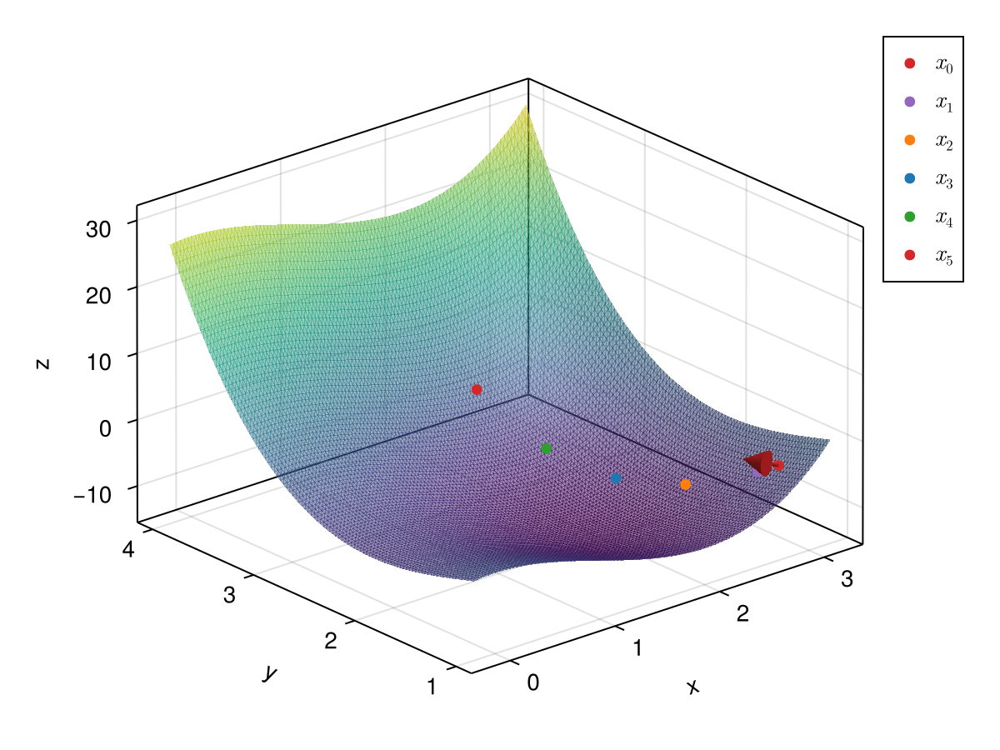

The Sufficient Decrease Condition
The Armijo condition or sufficient decrease condition states:
\[ f(R_{x_k}(\alpha_k{}p_k)) \leq f(x_k) + c_1g_{x_k}(\alpha_k{}p_k, \mathrm{grad}^g_{x_k}f), \]
for some constant $c_1\in(0, 1)$ (see SimpleSolvers.DEFAULT_WOLFE_c₁).
The sufficient decrease condition can also be written as
\[ \frac{f(R_{x_k}(\alpha_k{}p_k)) - f(x_k)}{\alpha_k} \leq g_{x_k}(c_1p_k, \mathrm{grad}^g_{x_k}f).\]
As we assume that $f(R_{x_k}(\alpha_k{}p_k)) \leq f(x_k)$ and $g_{x_k}(c_1p_k, \mathrm{grad}^g_{x_k}f) < 0$, we can rewrite this as:
\[ |\frac{f(R_{x_k}(\alpha_k{}p_k)) - f(x_k)}{\alpha_k}| \geq |g_{x_k}(c_1p_k, \mathrm{grad}^g_{x_k}f)|,\]
making clear why this is called the sufficient decrease condition. The parameter $c_1$ is typically chosen very small, around $10^{-4}$. This is implemented as SimpleSolvers.SufficientDecreaseCondition.
Example
We can visualize the sufficient decrease condition with an example:
x = [3., 1.3]
f = x -> 10 * sum(x .^ 3 / 6 - x .^ 2 / 2)
obj = MultivariateObjective(f, x)
hes = Hessian(obj, x; mode = :autodiff)
update!(hes, x)
c₁ = 1e-4
g = gradient!(obj, x)
rhs = -g
# the search direction is determined by multiplying the right hand side with the inverse of the Hessian from the left.
p = similar(rhs)
ldiv!(p, hes, rhs)
sdc = SufficientDecreaseCondition(c₁, x, f(x), g, p, obj)
# check different values
α₁, α₂, α₃, α₄, α₅ = .09, .4, 0.7, 1., 1.3
(sdc(α₁), sdc(α₂), sdc(α₃), sdc(α₄), sdc(α₅))(true, true, true, true, false)We can also illustrate this:
